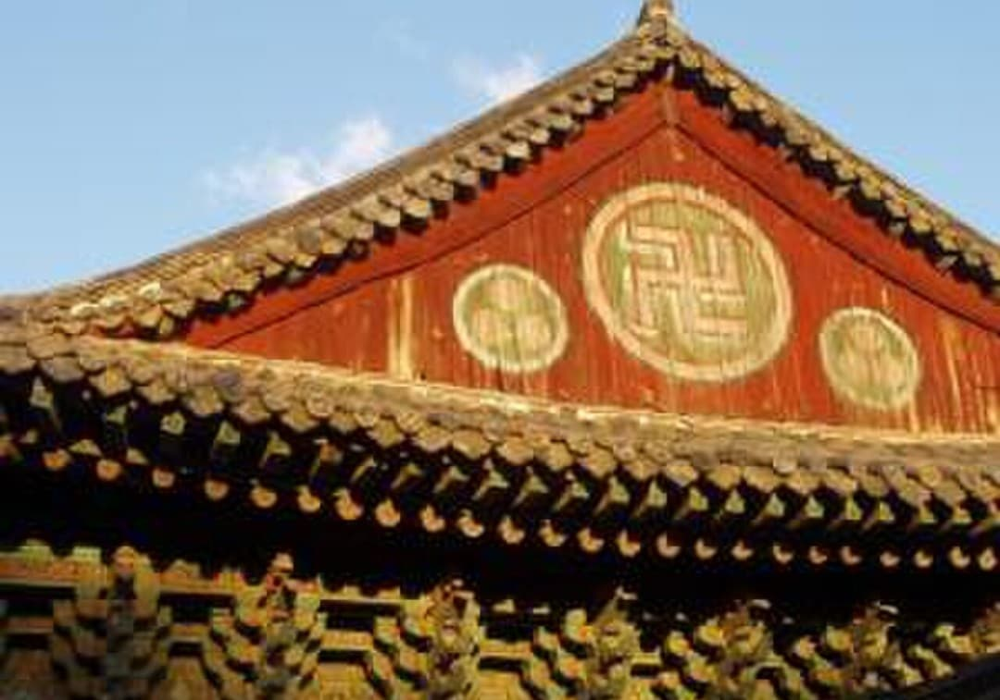
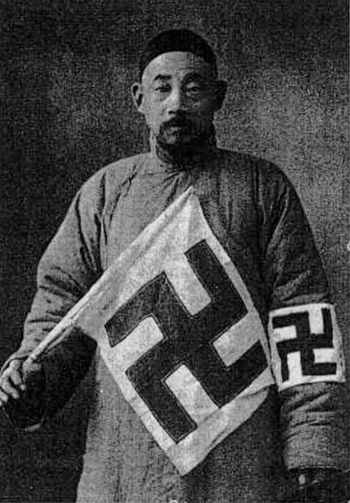
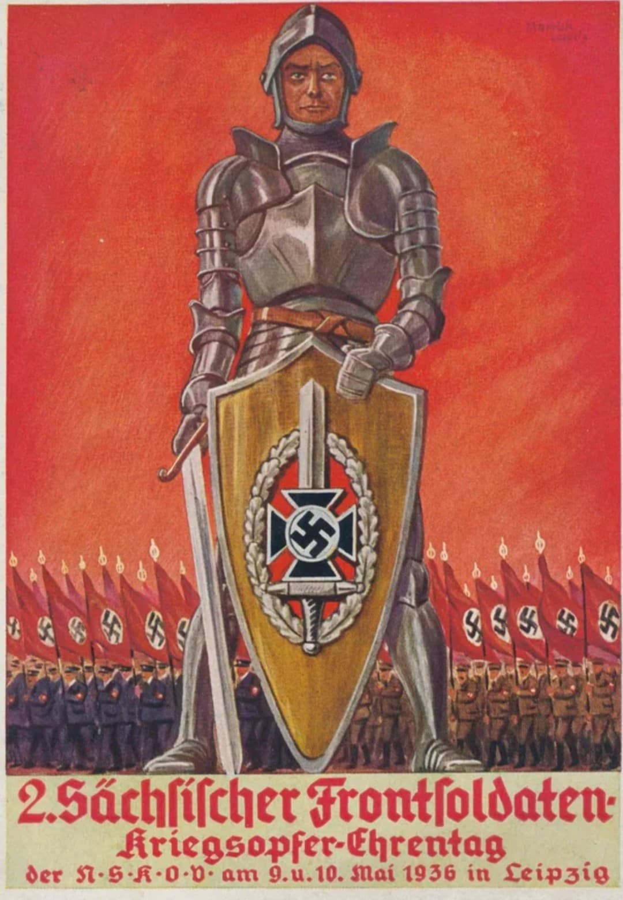
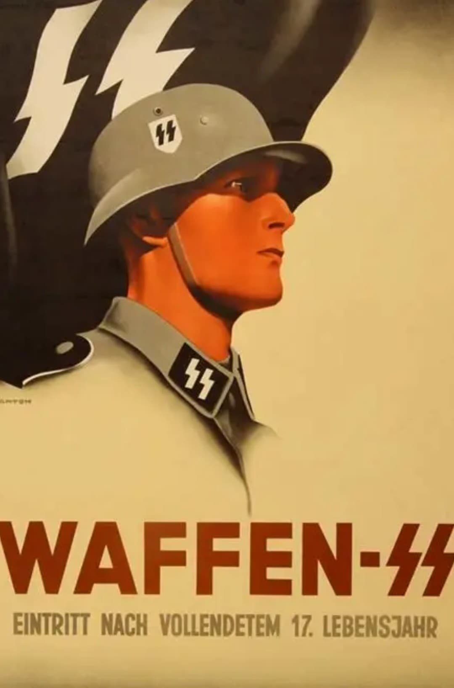

Svastika bouddhiste – Temple coréen (symbole de paix et de spiritualité).

Red Swastika Society – Organisation humanitaire chinoise (svastika positive).
Bien avant le XXᵉ siècle, la svastika est un symbole présent en Asie depuis des millénaires. Elle représente la chance, la protection, la paix et la spiritualité. On la retrouve dans les temples, les traditions bouddhistes et les associations humanitaires.
Dans ce contexte, la svastika n’a aucun lien avec la croix gammée nazie. Le symbole est ancien, positif et profondément enraciné dans les cultures asiatiques.

Drapeau nazi – Exemple moderne d’exposition d’un symbole détourné.
Au XXᵉ siècle, le parti nazi reprend la svastika pour en faire un emblème politique. Le symbole change totalement de sens : il devient associé à la violence, à la persécution, à la guerre et à l’idéologie raciste.
Ce détournement est l’un des plus radicaux de l’histoire : un symbole spirituel ancien devient un signe de terreur moderne.

Affiche de propagande nazie – Chevalier imaginaire (mythologie inventée).
En France, le Moyen Âge repose sur des faits historiques : Jeanne d’Arc, la chevalerie, les batailles, les archives. Dans la propagande nazie, le “chevalier germanique” est une invention graphique destinée à glorifier le régime.
Nous, Jeanne d’Arc, c’était vrai.
Personnage réel, documenté, interrogé, jugé, réhabilité. Une jeune femme qui a réellement combattu,
inspiré un peuple et marqué l’histoire de France.
Le “chevalier nazi”, lui, n’a jamais existé. C’est une création de propagande, un héros imaginaire
fabriqué pour donner au régime une apparence médiévale, sacrée et héroïque.
Comparer les deux permet de comprendre la différence entre un Moyen Âge historique et un Moyen Âge
inventé pour manipuler.
| Moyen Âge français | Moyen Âge nazi inventé |
|---|---|
| Jeanne d’Arc, chevaliers, archives, chroniques. | Chevalier imaginaire, armure stylisée, décor rouge. |
| Symboles historiques : croix, lys, bannières. | Symboles détournés : bouclier du régime, mise en scène. |
| Objectif : raconter un passé réel. | Objectif : mythifier le soldat moderne. |

Affiche Waffen‑SS – Recrutement des jeunes (symbole moderne et agressif).
Les éclairs SS ne viennent pas du Moyen Âge. Ils ont été créés au XXᵉ siècle pour représenter la Schutzstaffel. Leur forme “runique” est une récupération graphique, pas un héritage historique.
Ils incarnent la violence organisée, la répression et la terreur d’État. Dans un musée, ils doivent être présentés comme un symbole de domination, jamais comme un motif esthétique.
⬅ Retour Histoire & Mémoire